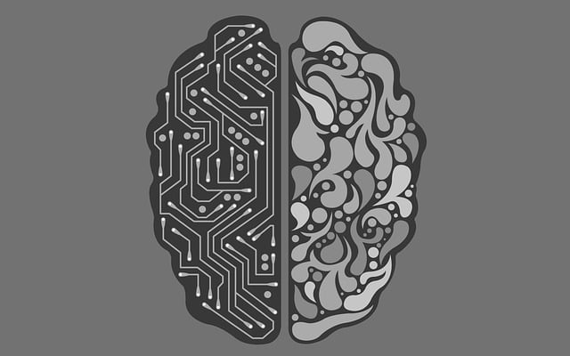
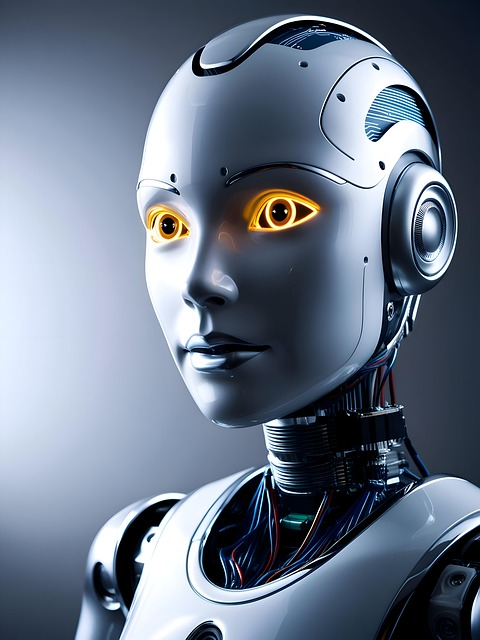
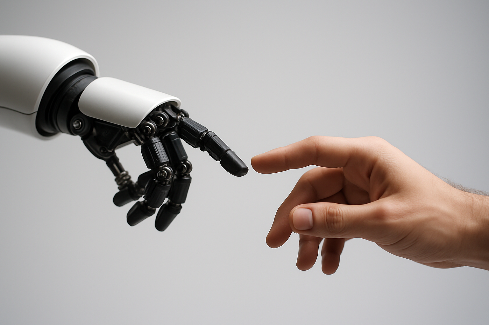

Intelligenza Artificiale
L’intelligenza artificiale (AI) è un insieme di tecnologie in grado di simulare alcune funzioni tipiche dell’intelligenza umana, come apprendere dai dati, riconoscere schemi, prendere decisioni e perfino “dialogare” con noi. Non si tratta di una singola macchina, ma di un sistema complesso che sta entrando in moltissimi ambiti: dalla medicina al lavoro, dai trasporti all’informazione. Sta diventando una presenza quotidiana, ma il suo vero impatto non è nei robot o negli assistenti virtuali: è nel modo in cui ci costringe a rivedere cosa significa essere intelligenti. Le macchine apprendono, analizzano, decidono. Ma non sentono, non comprendono il contesto umano, non hanno coscienza. Eppure, iniziamo a fidarci delle loro risposte più che delle nostre. Il rischio non è tanto che l’AI “diventi troppo intelligente”, ma che noi smettiamo di esercitare il nostro pensiero critico. Se deleghiamo alle macchine ogni scelta — dai gusti musicali fino alle decisioni sanitarie o politiche — potremmo diventare spettatori della nostra stessa vita. L’AI è uno strumento potente, ma resta una proiezione dei nostri limiti e dei nostri desideri. Il futuro non dipenderà solo da quanto sarà “intelligente” la tecnologia, ma da quanto sapremo restare umani accanto a essa.
Robotica
I robot non sono più solo nei film. Non hanno più bisogno di sembrare umanoidi per essere reali: oggi sono bracci meccanici nelle fabbriche, assistenti nei magazzini, droni che monitorano i campi agricoli o piccoli dispositivi che puliscono i pavimenti di casa. La robotica è entrata in silenzio nelle nostre vite, e lo ha fatto con efficienza, discrezione… e sempre più intelligenza. Negli ultimi anni, l’unione tra robotica e intelligenza artificiale ha permesso la nascita di macchine capaci non solo di eseguire ordini, ma anche di imparare, prendere decisioni, adattarsi agli imprevisti. Questo significa che non siamo più davanti a semplici strumenti, ma a nuovi “compagni di lavoro”, spesso più precisi, più rapidi, e instancabili. E qui nasce la domanda: che ruolo avranno gli esseri umani in questo scenario? La robotica promette di liberarci dai compiti più noiosi, pesanti o pericolosi. È un’idea affascinante. Ma allo stesso tempo, c’è chi teme che troppe cose vengano affidate alle macchine, al punto da rendere superflua la presenza umana in certi settori. L’automazione può migliorare la vita, sì, ma può anche mettere in crisi interi mestieri se non viene gestita con intelligenza e giustizia. Il problema non sono i robot. Il problema è cosa decidiamo di farne. Se li useremo solo per risparmiare tempo e denaro, rischieremo di perdere qualcosa di più prezioso: il senso del lavoro, delle relazioni, dell’ingegno umano. Ma se li consideriamo strumenti al nostro servizio, capaci di aiutarci a vivere meglio, lavorare in modo più sicuro e occuparci di ciò che davvero conta, allora la robotica potrà diventare una delle più grandi conquiste del nostro tempo. Il futuro non sarà fatto di uomini contro macchine, ma – si spera – di uomini insieme alle macchine. Con la giusta attenzione etica, con regole chiare e con una visione umana della tecnologia, potremo costruire un mondo dove l’intelligenza artificiale e quella umana si rafforzano a vicenda. Perché i robot possono fare tante cose, ma non potranno mai sostituire la creatività, l’empatia e la capacità di dare un senso alle cose: qualità che restano, e resteranno, profondamente umane.
Energia Sostenibile

Il futuro della tecnologia passa anche – e soprattutto – da come produrremo e useremo l’energia. In un mondo che consuma risorse naturali a un ritmo insostenibile, il vero progresso non si misura più solo in innovazione e velocità, ma nella capacità di rispettare e proteggere il pianeta. L’energia è il cuore pulsante della civiltà moderna: tutto ciò che ci circonda – trasporti, case, industrie, comunicazione – funziona grazie a essa. Ma per quanto ancora potremo contare su fonti che inquinano, si esauriscono e mettono a rischio il nostro futuro? Negli ultimi decenni, la scienza e la tecnologia hanno compiuto enormi passi avanti nel campo dell’energia sostenibile. Pannelli solari, turbine eoliche, impianti idroelettrici e geotermici rappresentano oggi valide alternative ai combustibili fossili. Queste fonti rinnovabili non solo riducono l’impatto ambientale, ma aprono anche la strada a un nuovo modo di pensare il consumo: più consapevole, distribuito e intelligente. La vera rivoluzione, però, non sta solo nella fonte di energia, ma nel modo in cui la gestiamo. Le cosiddette "smart grid", ovvero reti elettriche intelligenti, sono progettate per adattarsi in tempo reale alla domanda e all’offerta di energia. L’intelligenza artificiale, in questo contesto, gioca un ruolo fondamentale: può prevedere i consumi, ottimizzare la distribuzione, ridurre gli sprechi. In futuro, le nostre case potranno produrre energia da sole e condividerla con il vicinato, creando comunità energetiche autonome e virtuose. Eppure, anche l’energia sostenibile porta con sé nuove sfide. I materiali necessari per costruire pannelli solari e batterie – come il litio o le terre rare – devono essere estratti e utilizzati con responsabilità, per evitare che la transizione ecologica crei nuovi problemi ambientali o sociali. Non basta cambiare “fonte” se non cambiamo anche mentalità: il futuro dell’energia non può essere solo tecnologico, deve essere anche etico. In questo scenario in rapida evoluzione, la tecnologia si rivela uno strumento potente, ma neutro: sta a noi decidere come usarla. Possiamo immaginare un mondo in cui progresso e natura non siano più nemici, ma alleati. Un mondo in cui l’energia non sia più un privilegio di pochi, ma un diritto garantito per tutti. Un mondo dove ogni innovazione sia guidata dal rispetto, dalla responsabilità e dalla visione di un domani migliore. Il futuro della tecnologia è strettamente legato all’energia sostenibile. E quel futuro comincia oggi, nelle scelte quotidiane, nei piccoli gesti e nelle grandi decisioni. Sta a noi costruirlo.
Etica e Umanesimo Digitale
Uno dei grandi interrogativi del nostro tempo è il rapporto tra esseri umani e tecnologia. Le macchine stanno diventando sempre più “umane” ci capiscono, ci parlano, a volte ci consigliano. Ma cosa significa essere umani in un mondo dove l’intelligenza artificiale simula le nostre emozioni e prende decisioni sempre più autonome?
È fondamentale che la tecnologia resti al servizio dell’uomo, e non il contrario. L’umanesimo tecnologico è un concetto chiave per il futuro: bisogna mettere al centro i valori umani, l’etica, la consapevolezza. Non basta chiedersi cosa possiamo fare con la tecnologia, ma anche se è giusto farlo, e perché.